광학기사 (2004-08-08 기출문제)
1과목: 기하광학 및 광학기기
1. 빛이 수면에서 반사할 때 편광각은 53° 이다. 빛이 53°의 각을 이루며 물에 입사할 때 굴절각은?
- 53°
- 41°
- 39°
- 37°
(정답률: 알수없음)

2. 초점거리가 각각 10㎝인 볼록렌즈와 오목렌즈를 붙여 한개의 새로운 렌즈를 만든다면 새로운 렌즈의 초점거리와 렌즈의 종류는?
- 25㎝, 볼록렌즈
- 30㎝, 볼록렌즈
- 25㎝, 오목렌즈
- 30㎝, 오목렌즈
(정답률: 알수없음)
3. 깊이가 1m인 강물 밑바닥에 있는 돌을 쳐다보면 몇 ㎝인 곳에 있는 것처럼 보이겠는가? (단, 강물의 굴절률 1.3이다.)
- 130㎝
- 77㎝
- 59㎝
- 88㎝
(정답률: 알수없음)
4. 삼각프리즘을 통과한 광선이, 1m 떨어져 있는 곳에 놓여 있는 스크린 위에 입사광선의 방향에 대해서 0.01m만큼 변위되었다. 이 프리즘은 몇 diopter인가?
- 0.01
- 0.1
- 1
- 10
(정답률: 알수없음)
5. 굴절율이 1.6이고, 꼭지각이 5°인 얇은 프리즘이 물(굴절율 1.3)속에 잠겨있을 때 최소 편의각(minimum deviation)은 얼마인가?
- 0.04㎭
- 0.03㎭
- 0.02㎭
- 0.01㎭
(정답률: 알수없음)
6. 그림과 같이 굴절률 1.5인 유리로 된 반구의 평면 부분이 거울로 되어 있다. 반구의 반경이 10㎝일 때 거울앞 60㎝ 지점에 있는 물체의 상은 어디에 맺히겠는가?
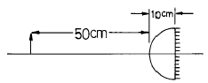
- 거울앞 60㎝
- 거울앞 50㎝
- 거울앞 40㎝
- 거울앞 30㎝
(정답률: 알수없음)
7. 대물렌즈의 초점거리가 15㎝인 망원경이 어떤 물체를 30 배 확대시킬 수 있다면 이 망원경의 대안렌즈의 초점거리는?
- 0.5㎝
- 1㎝
- 1.5㎝
- 2㎝
(정답률: 알수없음)
8. 곡률반경 100㎝인 오목거울의 앞 120㎝지점에 높이 50㎝의 물체가 있다. 비점수차를 구하면?
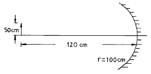
- 21.3㎝
- 12.5㎝
- 16.5㎝
- 25.6㎝
(정답률: 알수없음)
9. 두께가 d, 굴절률이 n인 평행유리판에 입사각 θi로 입사한 광선이 유리판을 투과하여 굴절해 갈때 유리판이 없을 때의 광선과 유리판을 놓아 투과하여 가는 광선사이의 거리 x는?
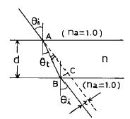
- d·(sinθi - sinθt)/cosθt
- d·sin(θi - θt)/cosθt
- d·sinθi/cosθt
- d·n·sinθi/cosθt
(정답률: 알수없음)
10. 스펙트럼 C선과 F선 사이에서 플린트 유리의 Abbe수를 구하면? (단, 스펙트럼 C, D, F선에 대한 이 유리의 굴절율은 각 각 nC = 1.571, nD = 1.575, nF = 1.585이다.)
- 4.107
- 28.41
- 41.07
- 69.93
(정답률: 알수없음)
11. 두께 12㎝의 평행평면 유리판 밑에 놓인 물체를 유리면 위에서 관찰할 경우, 물체는 얼마나 들떠 보이는가? (단, 유리의 굴절율은 1.5이다.)
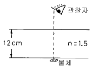
- 3㎝
- 4㎝
- 6㎝
- 12㎝
(정답률: 알수없음)
12. 무지개가 생기는 이유와 직접 관계 없는 광학 현상은?
- 전반사
- 굴절
- 회절
- 분산
(정답률: 알수없음)
13. 빛의 세기가 Io인 편광되지 않은 광속이 편광판의 투과축이 서로 60° 의 각도를 이루고 있는 두개의 편광판을 통과한 후, 광속의 세기는 어떻게 되는가?
- Io/2
- Io/4
- Io/8
- Io/16
(정답률: 알수없음)
14. 천체망원경의 대물렌즈 직경이 10㎝이고 초점거리가 50㎝이며 배율이 4배이다. 이 망원경의 exit pupil의 직경 ø와 접안렌즈의 초점거리 fe에 대한 설명으로 맞는 것은?
- ø = 2.5㎝, fe = 2.5㎝
- ø = 2.5㎝, fe = 12.5㎝
- ø = 12.5㎝, fe = 2.5㎝
- ø = 12.5㎝, fe = 12.5㎝
(정답률: 알수없음)
15. f-number에 대한 설명 중 틀린 것은?
- f-number가 감소하면 조리개를 통과하는 빛의 양이 증가된다.
- f-number가 증가하면 초점심도가 증가한다.
- f-number가 일정하더라도 물체거리가 증가하면 초점심도가 작아진다.
- f-number는 초점거리와 조리개의 지름에 의해 결정된다.
(정답률: 알수없음)
16. 볼록거울에 의한 상에 대한 설명으로 틀린 것은?
- 항상 실물보다 작다.
- 항상 정립상이다.
- 항상 허상이다.
- 항상 거울앞에 생긴다.
(정답률: 알수없음)
17. 그림과 같이 렌즈면상에 서로 직각인 선을 따라서 구멍을 뚫었다. 광축으로부터 벗어난 물체 점에서 나온 광이 이 구멍을 통과한 후 맺은 상은 어떤 수차를 포함하고 있는가?
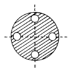
- 구면수차
- 비점수차
- 코마
- 왜곡수차
(정답률: 알수없음)
18. Petzval condition을 만족시키므로써 curvature of field를 줄이려고 한다. 만일 굴절율 1.5인 유리로 2개의 렌즈를 만들어서 위의 조건을 만족시킬 경우, 한 렌즈의 초점거리가 +20㎝라면 다른 렌즈의 power는 얼마인가?
- -10 diopters
- -5 diopters
- +5 diopters
- +10 diopters
(정답률: 알수없음)
19. 정상적인 사람의 눈에 대한 설명으로 틀린 것은?
- 수정체의 곡률 반경을 조절하여 초점을 맞춘다.
- 물체가 가까와지면 시각이 작아진다.
- 두눈이 만드는 광각에 의해 원근을 알 수 있다.
- 홍채는 조리개 역할을 한다.
(정답률: 알수없음)
20. 색수차를 줄이기 위하여 다음과 같은 doublet을 사용할 경우 사용된 광학유리로 알맞게 짝지어진 것은?
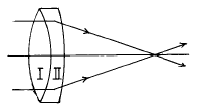
- Ⅰ: Flint, Ⅱ: Flint
- Ⅰ: Crown, Ⅱ: Crown
- Ⅰ: Flint, Ⅱ: Crown
- Ⅰ: Crown, Ⅱ: Flint
(정답률: 알수없음)
2과목: 파동광학
21. 다음 중 현미경의 분해능을 결정하는 요소가 아닌 것은?
- 시료를 비추는 빛의 파장
- 현미경 대물렌즈의 수차
- 시료를 비추는 빛의 편광상태
- 현미경 대물렌즈의 구경
(정답률: 알수없음)
22. 그림은 공기와 굴절율이 a = 1.4, b = 1.6, c = 1.8인 기판 표면에서의 반사의 경우이다. 편광되지 않은 광선이 입사되었다 하고 Reflectance에 대한 다음 표현 중 맞는 것은? (단, P편광 : TM파, S편광 : TE파)
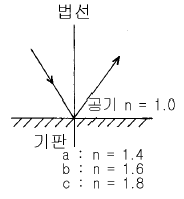
- P편광과 S편광 성분의 reflectance는 입사각에 무관하게 동일하다.
- P편광과 S편광 성분의 reflectance는 특정 입사각에서 zero가 될 수 있다.
- P편광만 특정 입사각에서 reflectance의 값이 zero가 될 수 있고 그 입사각은 c > b > a 순이다.
- S편광만 특정 입사각에서 반사율의 값이 zero가 될수 있고 그 입사각은 a > b > c 순이다.
(정답률: 알수없음)
23. 광 세기의 비가 4:1 인 두개의 광파가 간섭을 일으킬 때 형성된 간섭무늬에서 가장 밝은 곳과 가장 어두운 곳의 광 세기의 비는 얼마인가?
- 3:1
- 6:1
- 9:1
- 12:1
(정답률: 알수없음)
24. 다음 중 홀로그래피를 기록할 때 이용되는 광원으로 사용되지 않는 것은?
- 아르곤레이저
- LED
- 헬륨-네온레이저
- 헬륨-카드뮴레이저
(정답률: 알수없음)
25. 마이켈슨 간섭계의 한쪽 경로에 진공으로 배기시킨 원통을 경로와 나란히 설치하였다. 원통속에 어떤 기체를 서서히 주입하면서 변화하는 간섭무늬의 수를 측정한다. 파장이 500㎚인 빛을 사용하여 대기압이 될 때까지 변화한 무늬의 수를 측정한 결과 1000개 임을 알았다. 대기압하에서 이 기체의 굴절율은?
- 1.015
- 1.012
- 1.010
- 1.0⑤
(정답률: 알수없음)
26. 홀로그래픽 회절격자(holographic grating)는 광학에서 중요한 부품이다. 이는 다음 중 어디에 속하는 회절격자인가?
- 투과형
- 반사형
- 렌즈형
- 도파로형
(정답률: 알수없음)
27. 공간 주파수(Spatial frequency)의 단위는?
- line pairs/mm
- Hz
- Cycles/sec
- lines/sec
(정답률: 알수없음)
28. 굴절율이 n1인 매질에서 n2인 매질로 광파가 입사하고 있다. n1 > n2인 경우에 임계각(θc)는 어떻게 표시되는가?
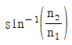
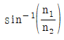
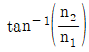
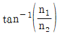
(정답률: 알수없음)
29. 함수 f(x)의 푸리에 변환이 F(k)일 때 다음과 같이 정의 되는 함수 g(x)의 푸리에 변환을 고르면?
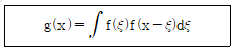
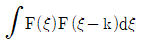
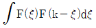
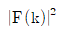
- {F(k)}2
(정답률: 알수없음)
30. 4.0x1014 ㎐의 주파수를 가지는 빛이 단위 ㎝당 10,000개 의 선을 가지는 회절격자(grating)에 입사된다. 이 grating으로 볼 수 있는 스펙트럼의 가장 큰 차수는?
- 0차
- 1차
- 2차
- 3차
(정답률: 알수없음)
31. Michelson간섭계에서 단색광을 입사시켰다. 그리고 2개의 반사경중 하나는 고정시키고, 다른 하나를 2.5x10-5m 이동시키는 동안 100개의 간섭 무늬쌍(bright and dark)이 지나가는 것이 관측되었다. 이 실험에서 이용한 단색광의 파장은?
- 250㎚
- 500㎚
- 750㎚
- 1000㎚
(정답률: 알수없음)
32. 지구에서 30억(3x109) ㎞ 떨어진 어떤 별의 중심파장이 500 ㎚인 빛을 방출하고 있다. 망원경 앞에 이중슬릿을 놓고 간섭무늬가 없어질 때까지 슬릿사이 간격을 조절하여 횡코헤런스폭(transverse coherence width)이 6 mm임을 알았다. 이 별의 지름을 구하면?
- 4.5x107㎞
- 1.5x106㎞
- 6.1x105㎞
- 3.1x105㎞
(정답률: 알수없음)
33. 굴절율이 각각 n1 = 1.55, n2 = 1.54인 유리를 사용하여 슬랩도파로를 만들 때 파장 λ = 0.85㎛인 광을 사용할 경우 짝수 TMo 모드만을 전송하는 단일모드 슬랩도파로 (single mode slab waveguide)가 되도록 만들고 싶다. 다음의 코어 두께중 어느 것이 위의 조건을 만족하는가? (단, 그림에 표시된 바와 같이 코어의 두께는 2d이므로 d의 값을 구한다.)
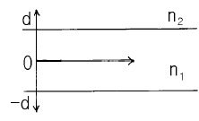
- d = 1.2㎛
- d = 5㎛
- d = 10㎛
- d = 15㎛
(정답률: 알수없음)
34. 격자선수가 500 lines/mm이고, 전체폭이 10 ㎝인 회절격자의 1차 분해능을 구하면?
- 25000
- 50000
- 75000
- 100000
(정답률: 알수없음)
35. 제작된 홀로그램의 1/4을 잘라서 재생했다. 전체를 재생했을 때와 비교하면 어떻게 되는가?
- 상의 선명도가 좋아진다.
- 상의 선명도에는 변화가 없다.
- 상의 선명도가 나빠진다.
- 상이 생기지 않는다.
(정답률: 알수없음)
36. 그림은 굴절율이 n1인 코아로부터 굴절율이 n2인 크래딩으로 빛이 입사되는 것을 보여준다. 이 광섬유를 통해 빛이 계속 전달되기 위한 설명으로 맞는 것은?
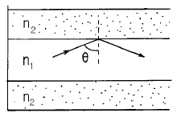
- 코아의 굴절율 n1은 크래딩의 굴절율 n2보다 커야 한다.
- 입사각 Θ는
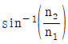
보다 커야 한다. - 광원은 반드시 단색광이어야 한다.
- 광원은 반드시 결맞는(coherent) 빛이어야 한다.
(정답률: 알수없음)
37. 그림에서 볼록렌즈의 후초점면상에는 입력영상의 Fourier 변화패턴이 형성된다. 여기서 후초점면상에서의 X축 좌표 X0에 대응되는 공간 주파수는?
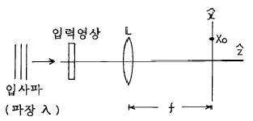
- λ/(X0ㆍf)
- f/(X0ㆍλ)
- X0/(fㆍλ)
- (X0ㆍf)/λ
(정답률: 알수없음)
38. 폭이 d인 한개의 슬릿에 파장이 λ인 평면파가 입사할 때 슬릿으로부터 D만큼 떨어져 있는 스크린상에 형성되는 회절무늬에서 Y0의 표현식은?
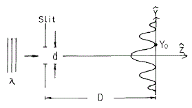
- λd/D
- λD/d
- D/(λd)
- d/(λD)
(정답률: 알수없음)
39. 광통신용 광섬유의 이점이 아닌 것은?
- 가볍다.
- 전자기파 간섭을 받지 않는다.
- 정보전송량이 크다.
- 충격에 강하다.
(정답률: 알수없음)
40. OTF(Optical transfer function)와 MTF(modulation trans-fer function)에 대한 다음 설명중 맞는 것은? (단, 여기서 OTF는 기호 æ(fx,fy)로 표시된다.)
- OTF의 절대값의 제곱을 MTF라 한다.
- æ(0,0) = 0 이다.
- ∣æ(fx,fy) ∣≧ ∣æ(0,0) ∣이다.
- diffraction limited system에서의 OTF는 변위된 두 pupil의 중첩면적을 pupil 전체로 나눈 것과 같다.
(정답률: 알수없음)
3과목: 광학계측과 광학평가
41. 레이저와 파장의 크기를 바르게 연결한 것은?
- Ar이온 레이저 - 5461Å
- He-Ne 레이저 - 4480Å
- Nd/YAG 레이저 - 6328Å
- CO2 레이저 - 10.6㎛
(정답률: 알수없음)
42. 사진기 Auto Focusing을 위한 Active Type 삼각거리측정 방식에서 거리측정기준으로 사용되는 것은?
- 피사체 콘트라스트
- 피사체 반사광량
- 피사체 반사각도
- 피사체 반사시간
(정답률: 알수없음)
43. 유전상수(dielectric constant)가 2.5인 유리의 굴절율은?
- 1.46
- 1.5
- 1.54
- 1.58
(정답률: 알수없음)
44. 광학 유리에 관한 일반적 설명으로 맞는 것은?
- 크라운유리의 분산은 크며 외부 환경에 강하다.
- 플린트(flint)유리의 분산은 작으며 외부 환경에 강하다.
- 크라운 유리의 분산은 작으며 외부 환경에 강하다.
- 플린트(flint)유리의 분산은 작으며 외부 환경에 약하다.
(정답률: 알수없음)
45. Fizeau간섭계나 단색광원장치로 직경 50mm의 광학평면의 평면도 측정을 하여 측정된 간섭무늬가 그림과 같았다. 이 때 광학평면의 평면도는? (단, 사용한 단색광원의 파장은 0.6㎛이다.)
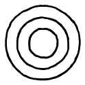
- 0.45㎛
- 0.9㎛
- 1.2㎛
- 2.4㎛
(정답률: 알수없음)
46. 높은 반사율을 얻기 위해 황화아연(ZnS)와 빙정석(Cryolite)의 층을 교대로 유리 기판위에 쌓은 시료의 반사율 스펙트럼에 관한 설명 중 옳은 것은?
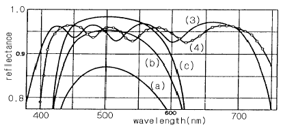
- ZnS는 저굴절물질, Cryolite는 고굴절물질로 사용되었다.
- 각 층의 두께는 진공중의 중심파장의 1/4이다.
- (a) - (b) - (c)의 스펙트럼 변화는 교대층의 수의 증가에 의한 것이다.
- (3)과 (4)의 스펙트럼의 차이는 교대층의 수가 다르기 때문이다.
(정답률: 알수없음)
47. 광학유리의 조건 중 하나는 무색성(Free From Color)이어야 한다는 것이다. 다음 중 무색성의 의미를 정확히 기술한 것은?
- 사용파장 대역의 빛을 손실없이 그대로 통과시켜야한다는 것을 의미
- 사용파장 대역에서 유리 내부의 밀도가 균일해야 한다는 것을 의미
- 사용파장 대역에서 광학유리 표면에서 빛의 반사가 일어나지 않아야 한다는 것을 의미
- 사용파장 대역의 빛을 선택적으로 투과시키는 것을 의미
(정답률: 알수없음)
48. 대물렌즈의 초점거리 5mm, 광경통 길이 16㎝, 투사대안 렌즈의 초점거리 5㎝인 현미경에 길이가 25㎝인 카메라에 부착된 현미경 사진장치가 있다. 이 사진 건판상의 총배율은?
- 160배
- 320배
- 80배
- 240배
(정답률: 알수없음)
49. 광학기기의 Window에 사파이어를 많이 사용하는 이유가 아닌 것은?
- 다른 광학유리에 비해 화학적으로 불활이어야 하므로
- 다른 광학유리에 비해 경도가 높아야 하므로
- 다른 광학유리에 비해 견고성(Strength)이 매우 뛰어나므로
- 다른 광학유리에 비해 열팽창계수가 매우 낮아야 하므로
(정답률: 알수없음)
50. 크라운유리의 굴절율이 ηC = 1.62⑤, ηD = 1.6231, ηF = 1.6294로 주어져 있다. 이 초자의 분산력의 역수(ν)를 구하면?
- 80
- 75
- 70
- 65
(정답률: 알수없음)
51. 진공 중에서 마이켈슨간섭계(Michelson interferometer)의 한쪽 반사경을 어떤 길이만큼 이동할 때 간섭무늬가 1개씩 이동하는가? (단, λ는 사용한 광원의 진공파장이다.)
- λ/4
- λ/2
- λ
- 2λ
(정답률: 알수없음)
52. 사진기의 조리개 직경을 반으로 줄일 경우 노출 시간은 어떻게 바꾸어야 하는가?
- 2배 길게 한다.
- 반으로 줄인다.
- 4배 길게 한다.
- 1/4로 줄인다.
(정답률: 알수없음)
53. 현미경의 대물 렌즈 경통에 10/0.25이라고 쓰여 있다. 각 각은 무엇을 표시하는가?
- 배율/N.A.
- 조리개 수/배율
- 초점 거리/배율
- 배율/초점 거리
(정답률: 알수없음)
54. 망원경의 배율에 관한 설명 중 맞는 것은?
- 대물렌즈의 시야
- (대물렌즈의 시야) x (대안렌즈의 시야)
- (대물렌즈의 시야) / (대안렌즈의 시야)
- (대안렌즈의 시야) / (대물렌즈의 시야)
(정답률: 알수없음)
55. 레이더나 광학적거리 측정기에서 거리측정을 위해서는 소위 펄스법이라 하여 일정 폭의 펄스를 발진시켜 물체에 부딪쳐 되돌아오는 펄스의 전파에 의해 생기는 기준 펄스와의 시간지연을 측정하여 물체까지의 거리를 측정한다. 어떤 거리 측정기에서 펄스폭이 0.1μsec인 펄스를 발사했을 때 측정기로 되돌아오는 펄스의 기준파에 의한 시간 지연이 0.02μsec일 때(그림참조) 물체까지의 거리는 얼마인가? (단, 빛의 전파속도는 3×108 m/sec이다.)
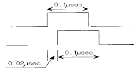
- 24m
- 3m
- 12m
- 6m
(정답률: 알수없음)
56. 다음 광량 측정 소자들 중에서 가장 약한 빛을 측정할 수 있는 것은?
- 광증배관
- 실리콘(Si)소자
- InGaAs 소자
- HgCdTe 소자
(정답률: 알수없음)
57. 렌즈 수차 중 렌즈의 축에 평행하게 입사한 광선이 초점에 맺혀지지 않고 렌즈의 축을 따라 퍼지게 만드는 것은?
- 구면 수차
- 코마 수차
- 비점 수차
- 색 수차
(정답률: 알수없음)
58. 구경 조리개(aperture stop)에 관한 설명으로 틀린 것은?
- 광학계에 들어오는 빛의 양을 결정한다.
- 가장자리 광선(marginal ray)은 구경 조리개의 가장자리를 지난다.
- 주광선(chief ray)은 구경 조리개의 중심을 지난다.
- 광학계의 첫번째 렌즈는 항상 구경 조리개이다.
(정답률: 알수없음)
59. 광학유리 지도(map)에 관한 설명으로 맞는 것은?
- 수평축은 Abbe수이고, 수직축은 He d선에서의 굴절률이다.
- 수평축은 He d선에서의 굴절률이고, 수직축은 Abbe수이다.
- 크라운(crown)유리의 Abbe수는 작다.
- 플린트(flint)유리의 Abbe수는 작다.
(정답률: 알수없음)
60. 광학 유리의 파장에 따른 굴절률 분포를 나타내는 식으로 적당하지 않은 것은?
- Cauchy방정식
- Sellmeier방정식
- Herzberger방정식
- Newton방정식
(정답률: 알수없음)
4과목: 레이저 및 광전자
61. 두 에너지준위의 에너지차가 1.8 eV라고 하자. 보통의 실내 온도(300K)에서 열평형상태에 있다면, 또 두 에너지준 위인 통계적 무게비(degenerate weight-factor)가 같다고 할 때 두 에너지준위에 있을 원자의 수 분포의 비(Nu/Nd)를 구하면? (단, Nu는 윗 준위에 있을 원자의 수, Nd는 아래 준위에 있을 원자의 수이다. 1 eV는 11,600K에 해당한다.)
- 5.9 x 10-31
- 5.9 x 10-27
- 1.7 x 1026
- 1.7 x 1030
(정답률: 알수없음)
62. Z축 방향으로 진행하는 레이저 광에서 전장을
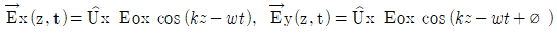
이라 할 때 직선편광은 두 성분의 위상차 ø가 얼마인 경우인가?- ±π/4
- ±π/2
- ±π
- ±3π/2
(정답률: 알수없음)
63. 그림은 니콜프리즘(Nicol prism)을 나타낸다. 광선 A와 B에 대하여 바르게 기술한 것은? (단, ↔와 ↕는 각각 z축, y축 전기장의 진동방향을 나타낸다.)
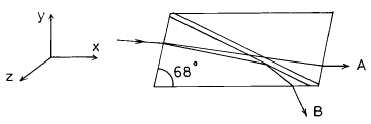
- A는 정상 광선(ordinary ray)이고, 전기장은 ↔ 선형 편광된다.
- A는 정상 광선(ordinary ray)이고, 전기장은 ↕ 선형 편광된다.
- B는 정상 광선(ordinary ray)이고, 전기장은 ↔ 선형 편광된다.
- B는 정상 광선(ordinary ray)이고, 전기장은 ↕ 선형 편광된다.
(정답률: 알수없음)
64. 대기오염도를 측정하는 데 기체 레이저가 잘 이용되고 있다. 그 이유로 가장 옳다고 생각되는 것은?
- 기체 레이저는 출력이 크기 때문이다.
- 기체 레이저는 제작이 쉽고 염가이기 때문이다.
- 기체 레이저의 발진파장이 많아 대기오염 기체의 흡수 파장과 일치되는 파장이 많기 때문이다.
- 기체 레이저의 발진 선폭이 커서 대기오염 기체의 발견에 용이하기 때문이다.
(정답률: 알수없음)
65. 다음 중 레이저를 이용하지 않는 것은?
- CD player
- 광통신
- Bar code reader
- 전자 레인지
(정답률: 알수없음)
66. 결정내에서 비선형 현상이 일어나는 이유로 타당한 것은?
- 유전상수가 전기장에 비례하지 않기 때문이다.
- 유전상수가 전기장의 방향에 따라 다르기 때문이다.
- 유전상수가 빛의 진행방향에 따라 변하기 때문이다.
- 굴절율 축들이 서로 수직하지 않기 때문이다.
(정답률: 알수없음)
67. KDP 결정을 이용하여 빛의 전장세기를 변조할 수 있는데 이는 KDP결정의 어떠한 성질을 이용하는 것인가?
- 광학적 Kerr 효과
- 전기광(Electro - optic) 효과
- 광음향(Electro - Acoustic) 효과
- 비선형 광학적(Nonlinear optic) 효과
(정답률: 알수없음)
68. 빛을 이용한 다음 실험 중 결맞음성(coherence 특성)이 크게 요구되지 않는 것은?
- 위상 공액파 발생시험
- Young의 간섭실험
- Holography 실험
- 반도체의 광전도성 실험
(정답률: 알수없음)
69. 어떤 레이저를 1㎛의 파장에서 TEMoo의 횡모드로 발진시켜 발생되는 레이저빛이 Gaussian 빛살폭이 1㎝가 되도록 하였다. 이 빛살을 초점거리 10㎝인 볼록렌즈로 집광하였을 때 이 렌즈의 초점거리에서의 빛살폭은 얼마인가?
- 약 0.1㎛
- 약 0.3㎛
- 약 3㎛
- 약 30㎛
(정답률: 알수없음)
70. 다음 중 Pockels 효과를 가장 크게 나타내는 결정은?
- GaAs
- KDP
- Quartz
- Zircon
(정답률: 알수없음)
71. Glan polarizing prism(Glan 편광기)을 만드는데 사용되는 결정의 이름은?
- Calcite
- Mica
- KDP
- Quartz
(정답률: 알수없음)
72. 투과면이 평행한 두 편광판 A, B에 편광되지 않은 광속이 투과하고 있다. 지금 편광판 A를 광선을 축으로 B에 대하여 60° 회전시키면, 투과되는 광속의 양은 처음의 몇 배로 되는가?
- 1/2
- 1/3
- 1/4
- 1/9
(정답률: 알수없음)
73. 다음 레이저 중 시간결맞음(Temporal Coherence) 특성이 가장 나쁜 레이저는?
- He-Ne 레이저
- CO2 레이저
- Ar+ 레이저
- N2 레이저
(정답률: 알수없음)
74. 시간적 결맞음을 증가시키는 방법으로 틀린 것은?
- 짧은 맥동(Pulse)를 만든다.
- Etalon을 공진기 안에 설치한다.
- Fabry-Perot을 공진기 내에 설치한다.
- 거울의 반사율을 높인다.
(정답률: 알수없음)
75. 직경 D인 평행 레이저 빔을 초점거리 f인 렌즈로 집속시켰을 때 그 집속점에서 레이저 빔의 크기는 어떻게 표현되는가? (단, 레이저 빔의 파장율은 λ, π는 원주율)
- fλ/πD
- 2fλ/πD
- 2Dλ/πf
- 2πf/λD
(정답률: 알수없음)
76. 파장이 λ인 선형 편광된 레이저 빛을 원형 편광된 레이저 빛으로 변환시키려고 한다. 이때 사용되어져야 할 운모판의 광학적 두께는?
- λ/4
- λ/2
- λ
- 2λ
(정답률: 알수없음)
77. 다음의 레이저 중 파장변환을 하지 않고도 직접 가시광선을 발진시키는 레이저를 고르면?
- CO2 레이저
- KrF 레이저
- Nd:YAG 레이저
- Ruby 레이저
(정답률: 알수없음)
78. 레이저에서 쓰지 않는 여기(Pumping)방법은?
- 화학적 여기
- 전기적 여기
- 광학적 여기
- 열적 여기
(정답률: 알수없음)
79. 레이저 출력을 높이는 방법 중 모드로킹(mode-locking)이라는 방법이 있다. 이 방법은 다음 중 어느 부분에 해당 되는가?
- 광변조(optical modulation)
- 광여기(optical excitation)
- 광합성(optical mixing)
- 광산란(optical scattering)
(정답률: 알수없음)
80. 자유전자 레이저에 대한 설명 중 틀리게 된 것은?
- 상대론적 에너지를 갖는 전자빔과 전자장과의 공명적인 상호작용에 의한 코히런트한 전자파를 발생시키는 것이다.
- 발진파장이 원자, 분자 및 고체의 전자에너지 준위에 속박되어 있지 않기 때문에 주파수를 연속적으로 변화시킬 수 있다.
- 전자빔의 에너지가 직접 광에너지로 변환되기 때문에 사용된 빔에너지의 회수가 용이하다.
- 여기상태에서 원자수명이 파장의 3승에 비례하여 짧기 때문에 같은 반전분포량을 얻기 위한 여기파워는 파장의 3승에 비례하여 커진다.
(정답률: 알수없음)